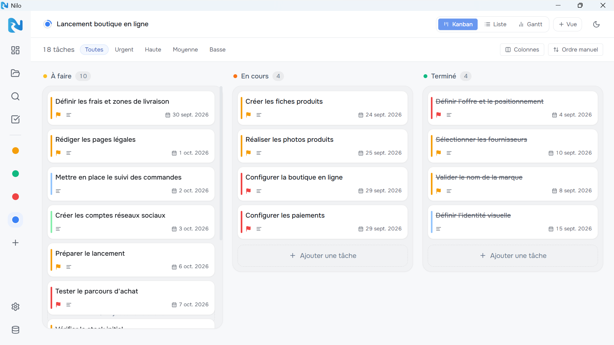
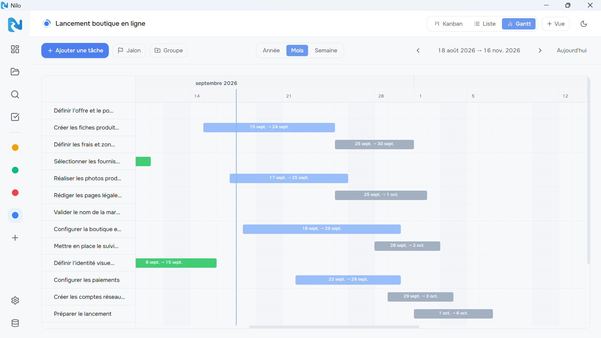
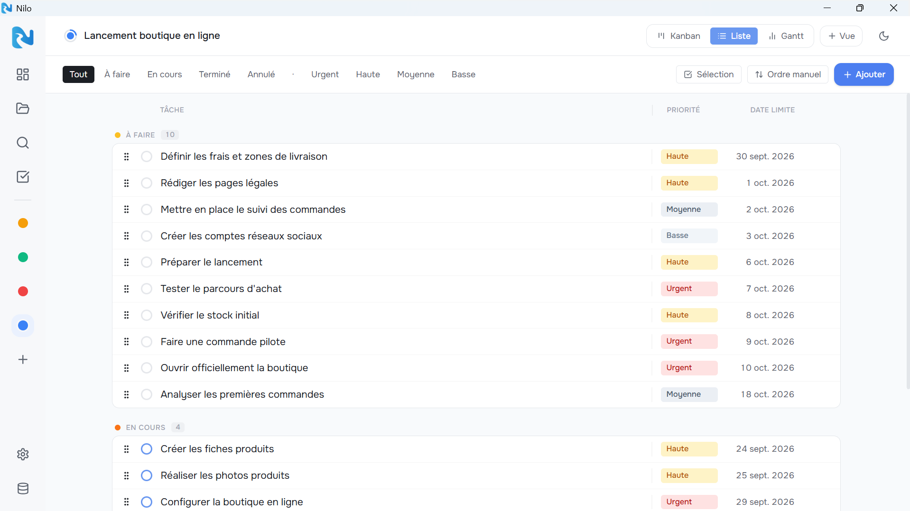

Kanban
Custom columns, drag and drop, priorities and assignees visible on every card — without opening the task.
Project management that stays on your machine. Kanban, Gantt, calendar — no account, no cloud, no subscription.
Loading version…



Custom columns, drag and drop, priorities and assignees visible on every card — without opening the task.
All project tasks on a single page, filterable and sortable by status, priority or due date.
See how long your tasks last and how they overlap. Drag bars to reschedule, create groups and milestones.
Your data lives in a nilo.db file on your disk. Back it up, move it, put it on your NAS — it belongs to you.
Tasks and events on a monthly calendar. Drag a deadline to another day to reschedule it instantly.
Split each task into steps and tick them off as you go. A progress ring shows right on the Kanban card.
Pick a folder: Nilo creates a SQLite database (nilo.db) in it. Nothing goes online. Copy it to a USB stick, put it on a NAS, or just keep it on your desktop.
€0
Personal, non-commercial use
€49.99 incl. VAT
Perpetual license · one-time payment
Secure payment via Lemon Squeezy. See the terms of sale.
Windows 10/11 · 64-bit
The .exe files are not signed yet — Windows may show a warning. Click “More info” → “Run anyway”.
On your machine, in the folder of your choice. Nilo creates a nilo.db file (SQLite) there. Nothing is ever sent online.
Only for professional use (company, association, public body). For personal use, Nilo is completely free.
No. No account, no sign-in. Nilo works entirely offline.
Windows 10/11 (64-bit), as an installer or portable version. macOS and Linux are planned for a future release.
The .exe files are not digitally signed yet. Click “More info” then “Run anyway”.
Yes. Nilo imports CSV exports (Notion, Asana, Jira, ClickUp, Monday, Excel…) and Trello JSON exports, right from Settings.